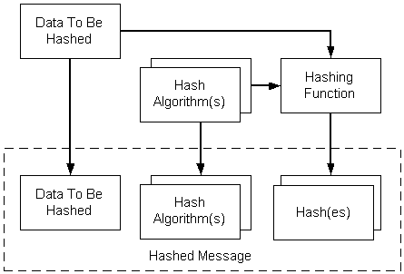

Hashed data consists of content of any type and a hash of the content. It can be used when it is only necessary to confirm that the message content has not been modified since the hash was created.
When creating a hashed message, there can be multiple hash algorithms and multiple hashes. The following illustration depicts the tasks required to encode a hashed message. The procedure is described in the text that follows the illustration.

To create a hashed message
To use low-level message functions to accomplish the tasks just outlined, use the following procedure.
To hash and encode a message using low-level message functions
Create or retrieve the content to be hashed.
Get a cryptographic provider.
Initialize the CMSG_HASHED_ENCODE_INFO structure.
Call CryptMsgCalculateEncodedLength to get the size of the encoded message BLOB. Allocate memory for it.
Call CryptMsgOpenToEncode, passing in CMSG_HASHED for the dwMsgType parameter and a pointer to CMSG_HASHED_ENCODE_INFO for the pvMsgEncodeInfo parameter. As a result of this call, you get a handle to the opened message.
Call CryptMsgUpdate, passing in the handle retrieved in step 5 and a pointer to the data that is to be hashed and encoded. This function can be called as many times as necessary to complete the encoding process.
Call CryptMsgGetParam, passing in the handle retrieved in step 5 and the appropriate parameter types to access the desired, encoded data. For example, pass in CMSG_CONTENT_PARAM to get a pointer to the entire PKCS #7 message.
If the result of this encoding is to be used as the inner data for another encoded message, such as an enveloped message, CMSG_BARE_CONTENT_PARAM must be passed. For an example showing this, see Alternate Code for Encoding an Enveloped Message.
Close the message by calling CryptMsgClose.
The result of this procedure is an encoded message that contains the original data, the hashing algorithms, and the hash of that data. A pointer to the encoded message BLOB is obtained in step 7.
The following two procedures decode and then verify hashed data.
To decode hashed data
To verify the hash
For an example program, see Example C Program: Encoding and Decoding a Hashed Message.
Â
Â